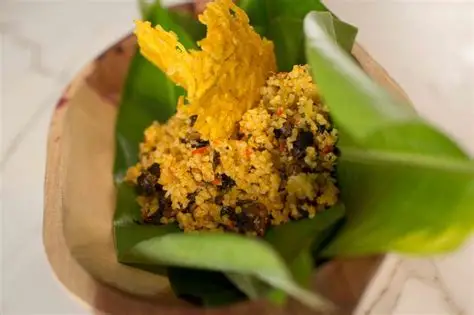

pastel de piangua
El pastel de piangua es un plato típico de la región Pacfica de Colombia, especialmente el municipio de nuqui
Este delicioso plato se prepara con piangua, un tipo de molusco que se encuentra en las aguas del Pacífico colombiano.
El pastel de piangua se caracteriza por su sabor único y su textura suave, y es muy apreciado por los habitantes de la región y los visitantes que desean probar la gastronomía local.
diferentes ingredientes tipicos de la region.

>
Ingredientes
- piangua
- arros blanco
- leche de coco
- cebolla cabezona
- cebolla larga o en rama
- pimenton rojo
- aji dulce
- ajo
- tomate
- tomate
- sal
- cilantro cimarron
- cilantro paisa
poleo
- albaca
zanahoria
aceite achoteado
Preparacion
limpiar y previamente lavada con limon las pianguas
precocinar en agua con un poco de ajo y cebolla y sal durante unos 15 o 30 minutos luego partela o dejalas enteras
(hacer el guiso) en un sarten con aceite achoteado sonfrie la cebolla larga,la cebolla morada , el pimenton y el ajo machacado
Añade las hierbas de la azotea(cimarron) sal, comino y un chorrito de leche de coco
sazonar el arroz: mezcla aparte del guiso cone el arroz crudo (o semi-cocido) para que absorba todo el color y el sabor del achiote y el coco
Armar los pasteles: extiende las hojas de platano limpias y cruzadas (con la vena hacia arriba)
coloca en el centro una porcion de arroz sazonado
Agrega encima la piangua , un poco mas de guizo, y opcionalmente rodajas de papa y zanahoria
Cubre con las capa pequeña de arroz
Envolver y Amarrar: Dobla las hojas con cuidado formando un paquete compacto y cuadrado o alargado
Ata firmemente con la cabulla o hilo de cocina paara que no entre agua durante la coccion
Cocinar:Coloca los pasteles en una olla grande con agua a hirviendo y un poco de sal.
Tapa y cocina a fuego medio-alto durante 1 hora a 1 hora y media,dependiendo del tamaño de los pasteles
Servir:Sacar los pasteles,dejalos reposar unos minutos,retira el hilo y las hojas, y disfrutalo caliente
Video de la receta
Ver video de la receta de pastel de piangua